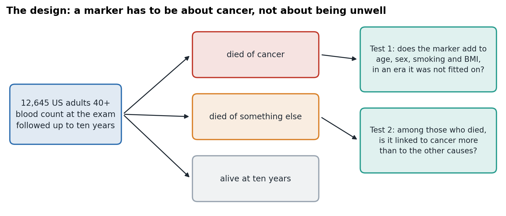
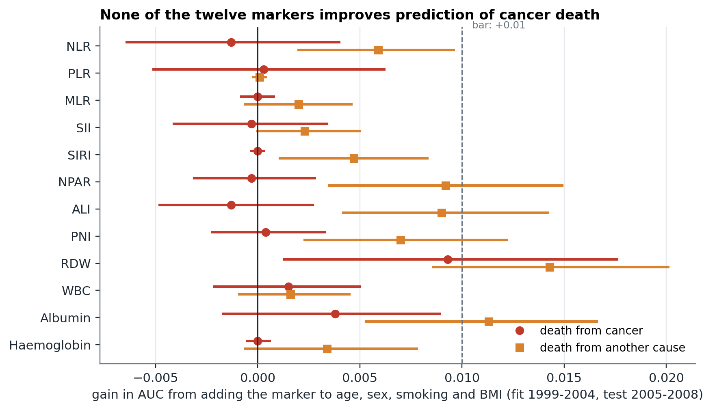
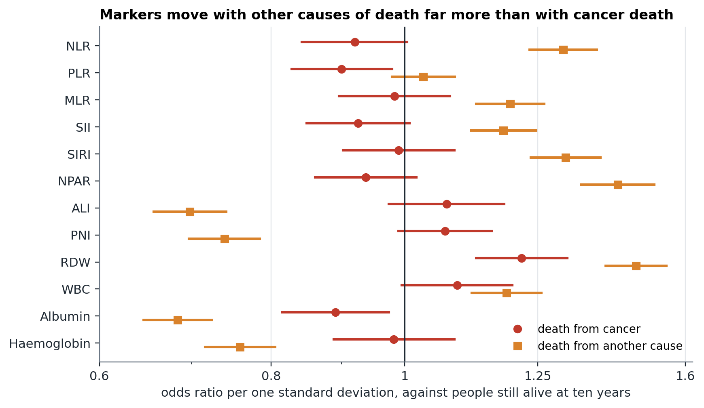
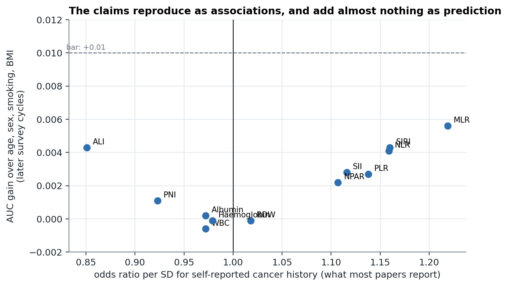
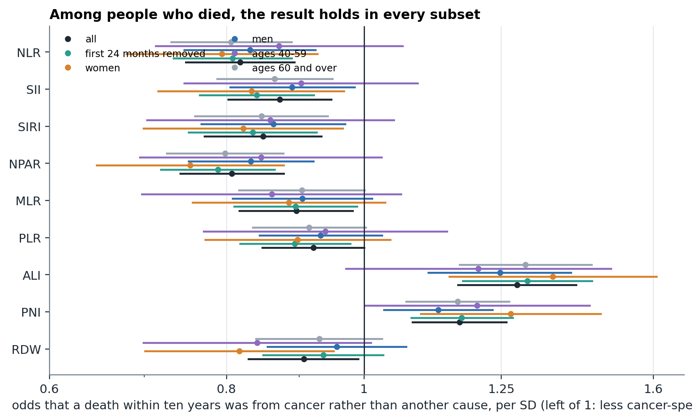
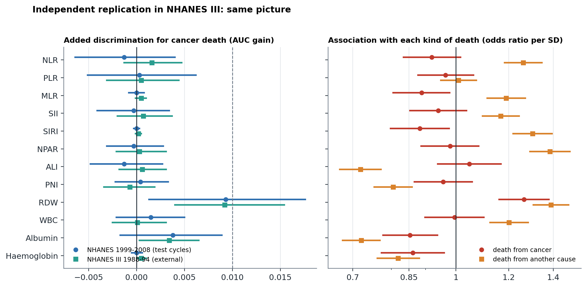
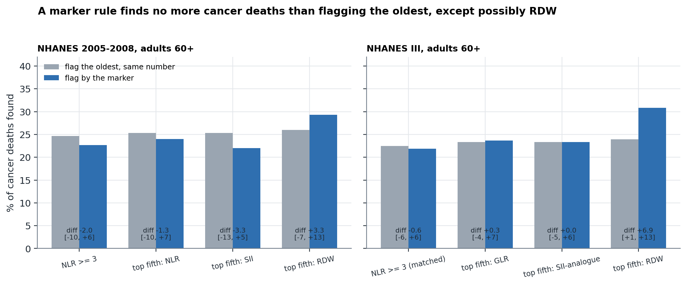

Background. A cheap way to estimate cancer risk would be to use tests people already have. A large literature does this with blood-count indices such as the neutrophil-to-lymphocyte ratio (NLR), the systemic immune-inflammation index (SII) and the neutrophil-percentage-to-albumin ratio (NPAR), reporting that higher values go with cancer. A marker that rises with illness in general would show the same thing, so two questions matter: does it add to what age, sex, smoking and body mass index already tell us, in data it was not built on, and is it linked to dying of cancer more than to dying of other causes?
Methods. We pre-registered twelve indices (NLR, platelet-to-lymphocyte ratio, monocyte-to-lymphocyte ratio, SII, SIRI, NPAR, advanced lung cancer inflammation index, prognostic nutritional index, RDW, white count, albumin, haemoglobin), two tests, and the bars for passing them, before running anything. In 12,645 US adults aged 40 and over from NHANES 1999-2008 with ten years of linked follow-up, each marker was added to a baseline of age, sex, smoking and BMI and tested on later survey cycles (test 1), and compared between people who died of cancer and of other causes (test 2), with death from other causes as a negative-control outcome.
Results. None of the twelve markers qualified (0 of 12). No marker improved discrimination of ten-year cancer death by the pre-set 0.01 AUC with a confidence interval above zero (baseline AUC 0.741); the best, RDW, gained +0.009 (95% CI +0.001 to +0.018) and gained more for other-cause death (+0.014). Five of the six inflammation indices were clearly associated with death from other causes (odds ratio per SD up to 1.43) but not with death from cancer (odds ratios 0.90 to 0.99), and among people who died all six pointed away from cancer (odds 0.81 to 0.92). Albumin-based markers passed the specificity test only because they lowered the risk of other deaths. All twelve together gained +0.012 (95% CI -0.002 to +0.024). The result held after removing the first two years, in each sex, in each age group and at a five-year horizon, and it replicated in an independent survey, NHANES III (1988-1994): again none qualified and all six inflammation analogues showed the frailty pattern. As a triage rule, flagging the top fifth by NLR, SII or the NLR cut-off of 3 found no more ten-year cancer deaths than flagging the oldest people at the same rate; the exception was RDW, whose gain of +0.0092 in NHANES III matched the main analysis and which, compared with flagging the oldest people, found 7 more cancer deaths per 100 and 13 fewer other-cause deaths per 100 there (the first interval just above zero; the same direction, with an interval including zero, in 2005-2008). In the design most papers use, self-reported cancer history at the same visit, the same markers were associated (odds ratio up to 1.22 per SD) but added at most 0.006 AUC.
Conclusions. Popular cheap blood-count markers behave as markers of general frailty. The associations in the literature reproduce, and they are real, but they are not cancer-specific and are of no use for prediction beyond age, sex, smoking and BMI. Papers that propose a cheap marker of cancer risk should report a baseline, a negative-control outcome and a test in separate data. The cheapest information, age, sex, smoking and BMI, remains the best available cancer risk information in this data.
A cheap, widely available way to estimate who is at higher risk of cancer would change how limited follow-up is used. The cheapest information a person has is what is already known: their age, sex, whether they have smoked, their weight. The next cheapest is the blood count that many adults have every year as part of routine care. If a number from that blood count carried cancer-specific information, it would cost almost nothing to use.
A large literature claims that it does. Indices built from a routine blood count, such as the neutrophil-to-lymphocyte ratio (NLR), the systemic immune-inflammation index (SII), the neutrophil-percentage-to-albumin ratio (NPAR) and the advanced lung cancer inflammation index (ALI), have been reported to associate with cancer in dozens of NHANES analyses alone. A search of Europe PMC on 7 October 2026 found 103 NHANES papers with these indices and cancer in the abstract. Only 5 also mention incremental prediction (C-index or net reclassification) and 6 mention specificity, negative controls or competing causes. Several of the studies we read note that the same index predicts cardiovascular death at least as well as cancer death.1,2,3
That last point is the problem. A marker that rises with illness in general will be associated with cancer in any sample, because ill people die of cancer, and it will also be associated with heart disease, diabetes and everything else. Two properties separate a cancer marker from a frailty marker. It must add to what age, sex, smoking and BMI already tell us, in data it was not built on. And it must be linked to dying of cancer more than to dying of other things, which is what a negative-control outcome is for.4
This paper tests twelve cheap blood-count markers against both properties. The tests and the bars for passing them were fixed before the analysis. We expected that most would fail, because earlier work in this project found that routine blood values add little to age and sex for cancer death and that lab-based alerts marked non-cancer death more than cancer death. We report the result either way.
The question, the twelve markers, the tests and the bars were committed to the project repository on 7 October 2026 (docs/CHEAP_MARKERS_PREREG.md) before the analysis was run. The expected result, that none would qualify, was written down with them. The sensitivity analyses (Section 3.6) were added afterwards and have no bar.
The US National Health and Nutrition Examination Survey (NHANES), cycles 1999-2000 to 2007-2008, linked by the National Center for Health Statistics to the National Death Index through 31 December 2019. Every person has at least ten years of follow-up. We kept adults 40 and over without a reported cancer diagnosis at the exam, with a complete blood count with differential, albumin and BMI. This left 12,645 people; 487 died of cancer (NCHS underlying cause 2, ICD-10 C00-C97) and 1,884 of another cause within ten years. Nobody was dropped for how they died. A secondary five-year analysis used all eight cycles through 2013-2014.
NLR (neutrophils over lymphocytes), PLR (platelets over lymphocytes), MLR (monocytes over lymphocytes), SII (platelets times neutrophils over lymphocytes), SIRI (neutrophils times monocytes over lymphocytes), NPAR (neutrophil percentage over albumin), ALI (BMI times albumin over NLR), PNI (albumin in g/L plus five times the lymphocyte count), red cell distribution width (RDW), white count, albumin and haemoglobin. Each was log-transformed and standardised on the fitting data, so effects are per one standard deviation. C-reactive protein (CRP) was analysed separately because it was not measured in 2011-2014.
The baseline model (M0) was logistic regression on age, age squared, sex, ever smoked and BMI. Test 1 added each marker to M0 and compared the AUC for ten-year cancer death in cycles 2005-2008, with models fitted on 1999-2004, using a paired bootstrap of 1,000 resamples for the interval. Test 2 used only people who died within ten years and asked whether the marker was associated with the death being from cancer rather than another cause (logistic regression adjusted for M0 and cycle), with Holm correction across the twelve markers.5 Test 3, the negative control, repeated Test 1 and the association with death from other causes, which a cancer-specific marker should not predict as strongly. Test 4 added all twelve markers together (ridge logistic regression). Test 5 reproduced the design most papers use: the association of each marker with self-reported cancer history at the same visit.
A marker qualified only if it passed both Test 1 (AUC gain of at least 0.01 with an interval above zero) and Test 2 (odds above 1 with a Holm-adjusted p below 0.05).
Three further pieces were fixed in an addendum to the pre-registration before they were run. Replication: the same tests in NHANES III (1988-1994), a separate survey with different staff and analysers, linked to deaths through 2019. NHANES III has a three-part differential (lymphocytes, mononuclear cells, granulocytes), so the neutrophil-based markers were replaced by granulocyte analogues, which include eosinophils and basophils. Models for Test 1 were fitted on the 1999-2008 cohort and applied to NHANES III with each marker standardised within its own survey. The replication bar was that no marker qualifies and at least five of six inflammation analogues show both a decedent odds ratio below one and a larger association with other-cause than cancer death. Decision analysis: fixed triage rules (NLR at or above 3, and the top fifth of NLR, SII and RDW) among adults 60 and over, comparing the cancer deaths found with flagging the oldest people at the same rate. Novelty search: a recorded Europe PMC query for blood-count markers and cancer, with every record that compared cancer with other causes of death and used separate data read in full.
Python (scikit-learn, NumPy, pandas). The analysis is experiments/cheap_markers.py and the sensitivity analyses are experiments/cheap_markers_sensitivity.py; the tables and figures are built from their saved output.

12,645 adults aged 40 and over: 7,207 in the fitting cycles (1999-2004, 292 cancer deaths) and 5,438 in the test cycles (2005-2008, 195 cancer deaths). The baseline of age, sex, smoking and BMI ranked ten-year cancer death with AUC 0.741 in the test cycles. It ranked death from other causes better, with AUC 0.829: the cheapest information predicts dying in general better than it predicts dying of cancer.
No. Figure 2 and Table 1 show the AUC gain for each marker. None reached the pre-set 0.01 with an interval above zero. Eleven of the twelve had intervals that included zero; the exception was RDW, which gained +0.0093 (95% CI +0.001 to +0.018), below the bar, and which gained more for death from other causes (+0.0143). Adding all twelve together gained +0.0116 (-0.002 to +0.024; baseline 0.740, with all 0.751), which also did not pass. CRP, measured in the same cycles, gained -0.0001 (-0.000 to +0.000).

| Marker | AUC gain, cancer death (95% CI) | AUC gain, other-cause death (95% CI) | OR per SD, cancer death | OR per SD, other-cause death | Qualifies |
|---|---|---|---|---|---|
| NLR | -0.0013 (-0.006 to +0.004) | +0.0059 (+0.002 to +0.010) | 0.92 (0.84 to 1.00) | 1.30 (1.23 to 1.38) | no |
| PLR | +0.0003 (-0.005 to +0.006) | +0.0001 (-0.000 to +0.000) | 0.90 (0.83 to 0.98) | 1.03 (0.98 to 1.09) | no |
| MLR | -0.0000 (-0.001 to +0.001) | +0.0020 (-0.001 to +0.005) | 0.98 (0.90 to 1.08) | 1.19 (1.13 to 1.26) | no |
| SII | -0.0003 (-0.004 to +0.003) | +0.0023 (-0.000 to +0.005) | 0.93 (0.85 to 1.01) | 1.18 (1.12 to 1.25) | no |
| SIRI | -0.0000 (-0.000 to +0.000) | +0.0047 (+0.001 to +0.008) | 0.99 (0.90 to 1.09) | 1.31 (1.24 to 1.39) | no |
| NPAR | -0.0003 (-0.003 to +0.003) | +0.0092 (+0.004 to +0.015) | 0.94 (0.86 to 1.02) | 1.43 (1.34 to 1.52) | no |
| ALI | -0.0013 (-0.005 to +0.003) | +0.0090 (+0.004 to +0.014) | 1.07 (0.97 to 1.18) | 0.70 (0.66 to 0.74) | no |
| PNI | +0.0004 (-0.002 to +0.003) | +0.0070 (+0.002 to +0.012) | 1.07 (0.99 to 1.16) | 0.74 (0.70 to 0.79) | no |
| RDW | +0.0093 (+0.001 to +0.018) | +0.0143 (+0.009 to +0.020) | 1.22 (1.13 to 1.31) | 1.47 (1.40 to 1.55) | no |
| WBC | +0.0015 (-0.002 to +0.005) | +0.0016 (-0.001 to +0.004) | 1.09 (0.99 to 1.20) | 1.19 (1.12 to 1.26) | no |
| Albumin | +0.0038 (-0.002 to +0.009) | +0.0113 (+0.005 to +0.017) | 0.89 (0.81 to 0.97) | 0.68 (0.65 to 0.72) | no |
| Haemoglobin | +0.0000 (-0.001 to +0.001) | +0.0034 (-0.001 to +0.008) | 0.98 (0.89 to 1.09) | 0.76 (0.72 to 0.81) | no |
AUC gain: baseline of age, sex, smoking and BMI plus the marker, fitted on 1999-2004 and tested on 2005-2008. OR per SD against people alive at ten years, adjusted for the baseline and cycle. Baseline AUC in the test era: cancer death 0.741, other-cause death 0.829. Qualifying requires an AUC gain of at least 0.01 with an interval above 0 AND a cancer-specific signal among decedents.
Eleven of the twelve markers were more strongly related to death from other causes than to death from cancer (Figure 3); the exception, PLR, was weakly and inversely related to cancer death and not at all to other deaths. The six inflammation indices (NLR, PLR, MLR, SII, SIRI and NPAR) had odds ratios against survivors of 1.03 (PLR) to 1.43 per SD for death from other causes and 0.90 to 0.99 for death from cancer; the intervals for cancer death included 1 for five of the six. Their gain in AUC for other-cause death was positive for most. Albumin, haemoglobin, ALI and PNI went the other way: higher values lowered the risk of other-cause death (odds ratios 0.68 to 0.76) with little or no effect on cancer death. These are the signatures of markers of general health.

Among the 2,370 people who died within ten years, higher values of the six inflammation indices were associated with lower odds that the death was from cancer (odds 0.81 to 0.92 per SD; Table 2). Four markers passed the specificity bar: ALI, PNI, albumin and haemoglobin. They did so because they protect against other deaths, which leaves cancer a larger share of the deaths that do occur; their own association with cancer death was at most 1.07 and mostly not distinguishable from 1. This is a limit of the specificity test used alone, and is why the qualifying rule requires added discrimination as well.
| Marker | OR (95% CI) | Holm-adjusted p | Passes specificity bar | Passes added-discrimination bar |
|---|---|---|---|---|
| NLR | 0.82 (0.75 to 0.89) | 0.000 | no | no |
| PLR | 0.92 (0.85 to 1.00) | 0.099 | no | no |
| MLR | 0.90 (0.82 to 0.98) | 0.077 | no | no |
| SII | 0.87 (0.80 to 0.95) | 0.008 | no | no |
| SIRI | 0.85 (0.77 to 0.93) | 0.006 | no | no |
| NPAR | 0.81 (0.74 to 0.88) | 0.000 | no | no |
| ALI | 1.28 (1.16 to 1.41) | 0.000 | yes | no |
| PNI | 1.17 (1.08 to 1.26) | 0.001 | yes | no |
| RDW | 0.91 (0.83 to 0.99) | 0.095 | no | no |
| WBC | 0.96 (0.87 to 1.05) | 0.383 | no | no |
| Albumin | 1.17 (1.07 to 1.29) | 0.007 | yes | no |
| Haemoglobin | 1.18 (1.06 to 1.30) | 0.011 | yes | no |
2,370 people who died within ten years, 487 of them from cancer. Adjusted for age, age squared, sex, smoking, BMI and cycle.
Result: 0 of 12 markers qualified. The pre-registered expectation was met.
The associations that papers report are real. In 24,674 adults, a standard deviation higher NLR went with 1.16 times the odds of a self-reported cancer history, MLR with 1.22, SIRI with 1.16; ALI was inversely associated (0.85). These are statistically clear. As prediction they are nearly worthless: no marker raised the AUC by more than 0.0056 in later survey cycles (Figure 5, Table 3). An odds ratio of 1.2 per SD is large enough to publish and far too small to rank people.

| Marker | OR per SD (95% CI) | AUC gain, later cycles |
|---|---|---|
| NLR | 1.16 (1.11 to 1.20) | +0.0041 |
| PLR | 1.14 (1.09 to 1.18) | +0.0027 |
| MLR | 1.22 (1.17 to 1.27) | +0.0056 |
| SII | 1.12 (1.07 to 1.16) | +0.0028 |
| SIRI | 1.16 (1.11 to 1.21) | +0.0043 |
| NPAR | 1.11 (1.06 to 1.15) | +0.0022 |
| ALI | 0.85 (0.82 to 0.89) | +0.0043 |
| PNI | 0.92 (0.89 to 0.96) | +0.0011 |
| RDW | 1.02 (0.98 to 1.06) | -0.0001 |
| WBC | 0.97 (0.94 to 1.01) | -0.0006 |
| Albumin | 0.97 (0.93 to 1.01) | +0.0002 |
| Haemoglobin | 0.98 (0.94 to 1.02) | -0.0001 |
24,674 adults 40 and over, 3,074 with a cancer history. Baseline AUC (later cycles) 0.717. Adjusted for age, sex, smoking, BMI and cycle.
It did not (Figure 4). Removing the first 24 months of follow-up, which guards against undiagnosed cancer raising a marker, left the specificity result unchanged for the inflammation indices (for NLR, 0.82 to 0.81). It held in women (0.79) and men (0.83) and at ages 40-59 (0.87) and 60 and over (0.81). With a five-year horizon in all eight cycles, tested on 2007-2014, no marker improved discrimination of cancer death by 0.01 (Table 4); the largest gain was RDW at +0.0081, again smaller than its gain for other-cause death (+0.0178).

| Marker | AUC gain, cancer death (95% CI) | AUC gain, other-cause death |
|---|---|---|
| NLR | -0.0057 (-0.011 to -0.001) | +0.0106 |
| PLR | -0.0028 (-0.006 to +0.000) | +0.0015 |
| MLR | -0.0006 (-0.002 to +0.001) | +0.0071 |
| SII | -0.0002 (-0.001 to +0.000) | +0.0045 |
| SIRI | +0.0016 (+0.000 to +0.003) | +0.0097 |
| NPAR | -0.0018 (-0.004 to +0.001) | +0.0159 |
| ALI | -0.0023 (-0.005 to +0.000) | +0.0170 |
| PNI | -0.0022 (-0.005 to +0.001) | +0.0167 |
| RDW | +0.0081 (-0.001 to +0.018) | +0.0178 |
| WBC | +0.0049 (-0.005 to +0.017) | +0.0015 |
| Albumin | +0.0048 (-0.003 to +0.014) | +0.0223 |
| Haemoglobin | +0.0008 (-0.006 to +0.008) | +0.0098 |
21,575 adults, 164 cancer deaths in the test era. Baseline AUC 0.750.
The tests were repeated in a separate survey (8,274 adults 40 and over, 414 ten-year cancer deaths). The baseline fitted on 1999-2008 ranked cancer death in NHANES III with AUC 0.715. 0 of 12 markers qualified. All six inflammation analogues showed the frailty pattern: a decedent odds ratio below 1 (0.76 to 0.97) and a larger association with other-cause than cancer death. The replication bar was met (Figure 6, Table 5).
The one marker that stood out in the main analysis stood out here. RDW gained +0.0092 (95% CI +0.004 to +0.015) in external data, against +0.0093 in the main test, both just under the pre-set 0.01 and with intervals above zero. It gained as much for other-cause death (+0.0092), its association with cancer death (1.27) was smaller than with other deaths (1.39), and it was not specific among decedents (0.97). So RDW carries a small, replicable signal beyond age, sex, smoking and BMI. It is not specific to cancer by the decedent test, and its gain for cancer death is about the same size as its gain for other-cause death.

| Marker (analogue) | External AUC gain, cancer death (95% CI) | Decedent OR (95% CI) | OR per SD, cancer death | OR per SD, other-cause death | Qualifies |
|---|---|---|---|---|---|
| NLR | +0.0016 (-0.001 to +0.005) | 0.81 (0.74 to 0.90) | 0.92 (0.83 to 1.02) | 1.26 (1.18 to 1.35) | no |
| PLR | +0.0005 (-0.003 to +0.004) | 0.97 (0.88 to 1.07) | 0.96 (0.88 to 1.06) | 1.01 (0.95 to 1.07) | no |
| MLR | +0.0005 (-0.000 to +0.001) | 0.81 (0.73 to 0.90) | 0.89 (0.81 to 0.98) | 1.19 (1.11 to 1.27) | no |
| SII | +0.0007 (-0.002 to +0.004) | 0.88 (0.80 to 0.97) | 0.94 (0.85 to 1.04) | 1.17 (1.10 to 1.24) | no |
| SIRI | +0.0002 (-0.000 to +0.001) | 0.76 (0.69 to 0.85) | 0.88 (0.80 to 0.98) | 1.30 (1.22 to 1.39) | no |
| NPAR | +0.0003 (-0.002 to +0.003) | 0.82 (0.74 to 0.90) | 0.98 (0.89 to 1.08) | 1.38 (1.29 to 1.48) | no |
| ALI | +0.0006 (-0.002 to +0.003) | 1.27 (1.13 to 1.42) | 1.05 (0.94 to 1.17) | 0.72 (0.67 to 0.77) | no |
| PNI | -0.0007 (-0.003 to +0.002) | 1.11 (1.01 to 1.21) | 0.96 (0.87 to 1.06) | 0.81 (0.75 to 0.86) | no |
| RDW | +0.0092 (+0.004 to +0.015) | 0.97 (0.88 to 1.08) | 1.27 (1.16 to 1.38) | 1.39 (1.31 to 1.48) | no |
| WBC | +0.0001 (-0.003 to +0.003) | 0.89 (0.80 to 0.99) | 0.99 (0.90 to 1.10) | 1.20 (1.13 to 1.28) | no |
| Albumin | +0.0034 (+0.000 to +0.006) | 1.09 (0.99 to 1.20) | 0.85 (0.78 to 0.94) | 0.72 (0.68 to 0.77) | no |
| Haemoglobin | +0.0005 (+0.000 to +0.001) | 1.00 (0.90 to 1.12) | 0.86 (0.77 to 0.96) | 0.82 (0.76 to 0.88) | no |
8,274 adults 40 and over, 414 ten-year cancer deaths. Models fitted on the 1999-2008 cohort and applied to NHANES III; neutrophil-based markers use granulocytes (three-part differential), so NLR is GLR, and so on. Baseline AUC 0.715.
Among adults 60 and over, flagging by NLR at or above 3 flagged 19% of people, found 23% of ten-year cancer deaths, and had a positive predictive value of 6.9% against a base rate of 5.8%. Flagging the same number of the oldest people found 25%. The top-fifth rules for NLR and SII did no better than age in either dataset (Figure 7, Table 6); the differences were within a few points either side of zero, with intervals that included zero.
RDW was the exception, with a consistent direction. Flagging the top fifth by RDW found 6.9 more cancer deaths per 100 than flagging the oldest in NHANES III (95% CI +1 to +13) and 3.3 in 2005-2008 (interval -7 to +13, including zero). Compared with flagging the oldest, it found fewer other-cause deaths (30% against 43% in NHANES III), because flagging by age picks the very old, who mostly die of other causes. So the RDW rule is tilted toward cancer relative to age. It is still a weak rule: its positive predictive value was 11% in NHANES III, so about nine in ten of the people it flagged did not die of cancer within ten years, and a clinician would have to weigh that cost of follow-up against the gain.

| Data | Rule | Flagged | Cancer deaths found by the rule | PPV | Found by flagging the oldest, same number | Difference, points (95% CI) |
|---|---|---|---|---|---|---|
| NHANES 2005-2008 | NLR >= 3 | 19% | 22.7% | 6.9% | 24.7% | -2.0 (-10 to +6) |
| NHANES 2005-2008 | top fifth of NLR | 20% | 24.0% | 7.0% | 25.3% | -1.3 (-10 to +7) |
| NHANES 2005-2008 | top fifth of SII | 20% | 22.0% | 6.4% | 25.3% | -3.3 (-13 to +5) |
| NHANES 2005-2008 | top fifth of RDW | 20% | 29.3% | 8.3% | 26.0% | +3.3 (-7 to +13) |
| NHANES III | NLR-analogue, cutoff matched to NLR >= 3 | 19% | 21.9% | 8.8% | 22.5% | -0.6 (-6 to +6) |
| NHANES III | top fifth of GLR | 20% | 23.6% | 9.1% | 23.4% | +0.3 (-4 to +7) |
| NHANES III | top fifth of SII-analogue | 20% | 23.4% | 9.0% | 23.4% | +0.0 (-5 to +6) |
| NHANES III | top fifth of RDW | 21% | 30.8% | 11.2% | 23.9% | +6.9 (+1 to +13) |
Ten-year cancer death rates: 5.8% in 2005-2008, 7.7% in NHANES III. PPV: of those flagged, the share who died of cancer within ten years.
The idea of reading cancer risk from a routine blood count is attractive, and the associations in the literature are real. They are not what they seem. The popular indices are largely markers of general frailty: they are more strongly tied to dying of other causes than of cancer, they point away from cancer among people who died, and none improves on age, sex, smoking and BMI in data it was not built on. Taken as a cancer test, they would mostly find people who are ill.
Two practical points follow. First, the cheapest information, age, sex, smoking and BMI, is already the best cancer-risk information in this data, and it predicts death from other causes even better (0.83 against 0.74). The most useful job for cheap risk information may therefore be deciding who is offered an expensive, specific test, which is how screening eligibility rules already work, and not detecting cancer itself. Second, any paper proposing a cheap marker of cancer risk should report the baseline, a model fitted and tested in different data, and a negative-control outcome, because the association alone does not distinguish a cancer marker from a frailty marker.
RDW, the width of the distribution of red cell sizes, was the only marker with a positive interval for cancer death in the main test (+0.0093) and its odds ratio against survivors for cancer death was 1.22 (1.13 to 1.31). It was a stronger marker of other deaths (1.47), and it missed the bar in both surveys, so we do not call it a cancer marker. But its small gain was reproduced in an independent survey (+0.0092, interval above zero) and its triage rule found more cancer deaths than age alone in NHANES III. It is the natural first candidate for a study in data with cancer diagnoses and symptoms, where we could ask whether it adds anything for particular cancers.
Our results agree with what the association studies themselves report when they look: NLR predicting cardiovascular death more clearly than cancer death even among people with cancer,2 and the immune-inflammation index linking to all-cause mortality linearly but to cancer mortality in a U-shape.1 Single markers and pairs have been compared across causes of death in general-population cohorts: for example, the immune-inflammation and inflammation-response indices in a Chinese community cohort, where the first was linked to all-cause, cardiovascular and respiratory death but not cancer death,6 and RDW-to-albumin and albumin in cohorts that include the UK Biobank.7,8 Our recorded search (Section 2.5; 2,469 records, of which 5 had at least three markers, a cause comparison and a validation cue, and none of those five was a general-population test of this kind) found no study that puts a dozen markers through the same pre-registered tests with a negative-control outcome, an unseen era and an independent replication. The contribution is that head-to-head design and its decision-analysis; the finding that these markers track general frailty is not new for individual markers, and we do not claim it is.
docs/CLINICAL_DATA_ACCESS.md), starting with RDW.This study was carried out with an AI assistant (Anthropic Claude, via Claude Code), which wrote the analysis code, ran the analyses, drafted the text and searched for background literature. An AI cannot be an author. The human author set the question, is responsible for the work, and must verify the statistics and every statement before submission.
The study uses public, de-identified NHANES data and NCHS public-use linked mortality files; no participants were contacted. Code, pre-registration and results are in the public repository (github.com/palashraks-afk/OncoVision). Clinical mentorship and authorship are not asserted here.
None declared. No funding.
References 4, 9 and 10 were looked up by title in Crossref and match. References 1 to 3 and 6 to 8 were identified by literature searches (6 to 8 from Europe PMC abstracts) and their journals and volumes should be completed from the originals. Reference 5 is classical and was not machine-verified. Reference 11 is a data product.